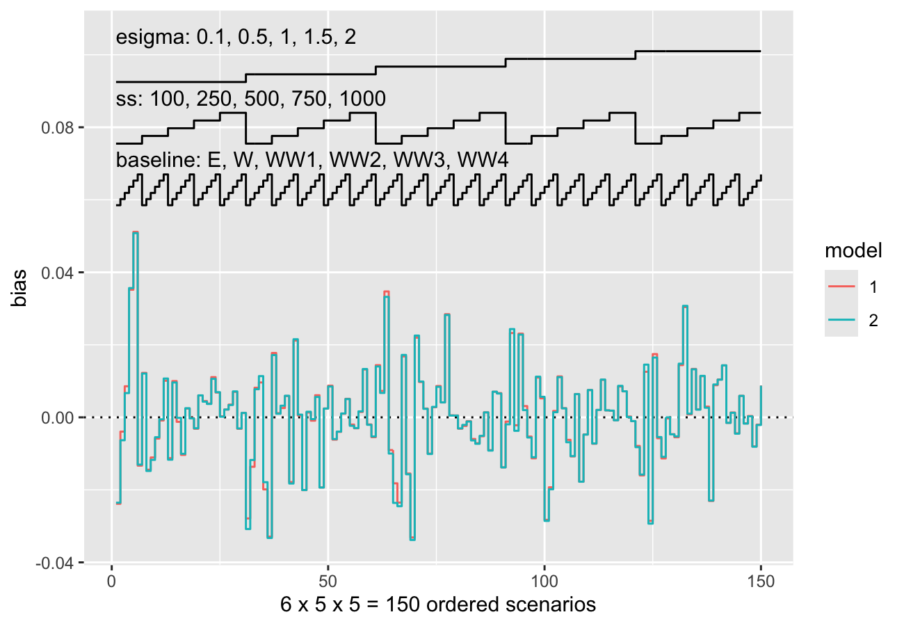
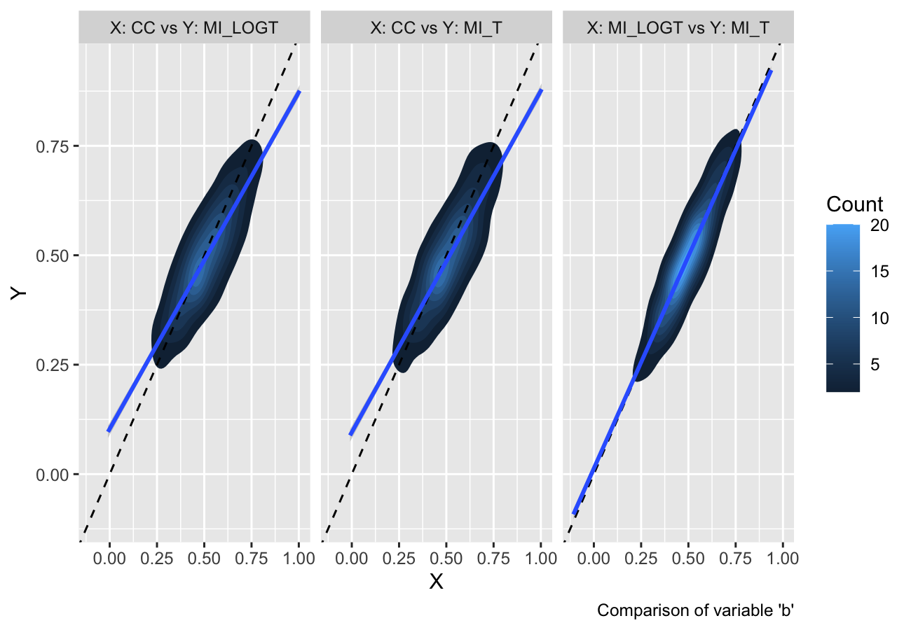

rsimsum is an R package that can compute summary
statistics from simulation studies. rsimsum is modelled
upon a similar package available in Stata, the user-written command
simsum (White I.R., 2010).
The aim of rsimsum is to help to report simulation
studies, including understanding the role of chance in results of
simulation studies: Monte Carlo standard errors and confidence intervals
based on them are computed and presented to the user by default.
rsimsum can compute a wide variety of summary statistics:
bias, empirical and model-based standard errors, relative precision,
relative error in model standard error, mean squared error, coverage,
bias. Further details on each summary statistic are presented elsewhere
(White I.R., 2010; Morris et al, 2019).
The main function of rsimsum is called
simsum and can handle simulation studies with a single
estimand of interest at a time. Missing values are excluded by default,
and it is possible to define boundary values to drop estimated values or
standard errors exceeding such limits. It is possible to define a
variable representing methods compared with the simulation study, and it
is possible to define by factors, that is, factors that vary
between the different simulated scenarios (data-generating mechanisms,
DGMs). However, methods and DGMs are not strictly required: in that
case, a simulation study with a single scenario and a single method is
assumed. Finally, rsimsum provides a function named
multisimsum that allows summarising simulation studies with
multiple estimands as well.
An important step of reporting a simulation study consists in
visualising the results; therefore, rsimsum exploits the R
package ggplot2
to produce a portfolio of opinionated data visualisations for quick
exploration of results, inferring colours and facetting by
data-generating mechanisms. rsimsum includes methods to
produce (1) plots of summary statistics with confidence intervals based
on Monte Carlo standard errors (forest plots, lolly plots), (2) zipper
plots to graphically visualise coverage by directly plotting confidence
intervals, (3) plots for method-wise comparisons of estimates and
standard errors (scatter plots, Bland-Altman plots, ridgeline plots),
and (4) heat plots. The latter is a visualisation type that has not been
traditionally used to present results of simulation studies, and
consists in a mosaic plot where the factor on the x-axis is the methods
compared with the current simulation study and the factor on the y-axis
is the data-generating factors. Each tile of the mosaic plot is coloured
according to the value of the summary statistic of interest, with a red
colour representing values above the target value and a blue colour
representing values below the target.
Installation
You can install rsimsum from CRAN:
install.packages("rsimsum")Alternatively, it is possible to install the development version from
GitHub using the remotes package:
# install.packages("remotes")
remotes::install_github("ellessenne/rsimsum")Example
This is a basic example using data from a simulation study on missing
data (type help("MIsim", package = "rsimsum") in the R
console for more information):
library(rsimsum)
data("MIsim", package = "rsimsum")
s <- simsum(data = MIsim, estvarname = "b", true = 0.5, se = "se", methodvar = "method", x = TRUE)
#> 'ref' method was not specified, CC set as the reference
s
#> Summary of a simulation study with a single estimand.
#> True value of the estimand: 0.5
#>
#> Method variable: method
#> Unique methods: CC, MI_LOGT, MI_T
#> Reference method: CC
#>
#> By factors: none
#>
#> Monte Carlo standard errors were computed.We set x = TRUE as it will be required for some plot
types.
Summarising the results:
summary(s)
#> Values are:
#> Point Estimate (Monte Carlo Standard Error)
#>
#> Non-missing point estimates/standard errors:
#> CC MI_LOGT MI_T
#> 1000 1000 1000
#>
#> Average point estimate:
#> CC MI_LOGT MI_T
#> 0.5168 0.5009 0.4988
#>
#> Median point estimate:
#> CC MI_LOGT MI_T
#> 0.5070 0.4969 0.4939
#>
#> Average variance:
#> CC MI_LOGT MI_T
#> 0.0216 0.0182 0.0179
#>
#> Median variance:
#> CC MI_LOGT MI_T
#> 0.0211 0.0172 0.0169
#>
#> Bias in point estimate:
#> CC MI_LOGT MI_T
#> 0.0168 (0.0048) 0.0009 (0.0042) -0.0012 (0.0043)
#>
#> Empirical standard error:
#> CC MI_LOGT MI_T
#> 0.1511 (0.0034) 0.1320 (0.0030) 0.1344 (0.0030)
#>
#> % gain in precision relative to method CC:
#> CC MI_LOGT MI_T
#> 0.0000 (0.0000) 31.0463 (3.9375) 26.3682 (3.8424)
#>
#> Mean squared error:
#> CC MI_LOGT MI_T
#> 0.0231 (0.0011) 0.0174 (0.0009) 0.0181 (0.0009)
#>
#> Model-based standard error:
#> CC MI_LOGT MI_T
#> 0.1471 (0.0005) 0.1349 (0.0006) 0.1338 (0.0006)
#>
#> Relative % error in standard error:
#> CC MI_LOGT MI_T
#> -2.6594 (2.2049) 2.2233 (2.3318) -0.4412 (2.2690)
#>
#> Coverage of nominal 95% confidence interval:
#> CC MI_LOGT MI_T
#> 0.9430 (0.0073) 0.9490 (0.0070) 0.9430 (0.0073)
#>
#> Bias-eliminated coverage of nominal 95% confidence interval:
#> CC MI_LOGT MI_T
#> 0.9400 (0.0075) 0.9490 (0.0070) 0.9430 (0.0073)
#>
#> Power of 5% level test:
#> CC MI_LOGT MI_T
#> 0.9460 (0.0071) 0.9690 (0.0055) 0.9630 (0.0060)Vignettes
rsimsum comes with 5 vignettes. In particular, check out
the introductory one:
vignette(topic = "A-introduction", package = "rsimsum")The list of vignettes could be obtained by typing the following in the R console:
vignette(package = "rsimsum")Visualising results
As of version 0.2.0, rsimsum can produce a
variety of plots: among others, lolly plots, forest plots, zipper plots,
etc.:

autoplot(s, type = "zip")With rsimsum 0.5.0 the plotting
functionality has been completely rewritten, and new plot types have
been implemented:
- Scatter plots for method-wise comparisons, including Bland-Altman type plots;
autoplot(s, type = "est_ba")
#> `geom_smooth()` using formula 'y ~ x'
- Ridgeline plots.
autoplot(s, type = "est_ridge")
#> Picking joint bandwidth of 0.0295
Nested loop plots have been implemented in rsimsum
0.6.0:
data("nlp", package = "rsimsum")
s.nlp <- rsimsum::simsum(
data = nlp, estvarname = "b", true = 0, se = "se",
methodvar = "model", by = c("baseline", "ss", "esigma")
)
#> 'ref' method was not specified, 1 set as the reference
autoplot(s.nlp, stats = "bias", type = "nlp")
Finally, as of rsimsum 0.7.1 contour plots
and hexbin plots have been implemented as well:
autoplot(s, type = "est_density")
#> `geom_smooth()` using formula 'y ~ x'
autoplot(s, type = "est_hex")
#> `geom_smooth()` using formula 'y ~ x'They provide a useful alternative when there are several data points with large overlap (e.g. in a scatterplot).
The plotting functionality now extend the S3 generic
autoplot: see ?ggplot2::autoplot and
?rsimsum::autoplot.simsum for further details.
More details and information can be found in the vignettes dedicated to plotting:
Citation
If you find rsimsum useful, please cite it in your
publications:
citation("rsimsum")
#>
#> To cite the rsimsum package in publications, please use:
#>
#> Gasparini, (2018). rsimsum: Summarise results from Monte Carlo simulation studies.
#> Journal of Open Source Software, 3(26), 739, https://doi.org/10.21105/joss.00739
#>
#> A BibTeX entry for LaTeX users is
#>
#> @Article{,
#> author = {Alessandro Gasparini},
#> title = {rsimsum: Summarise results from Monte Carlo simulation studies},
#> journal = {Journal of Open Source Software},
#> year = {2018},
#> volume = {3},
#> issue = {26},
#> pages = {739},
#> doi = {10.21105/joss.00739},
#> url = {https://doi.org/10.21105/joss.00739},
#> }References
- White, I.R. 2010. simsum: Analyses of simulation studies including Monte Carlo error. The Stata Journal 10(3): 369-385 <https://www.stata-journal.com/article.html?article=st0200>
- Morris, T.P., White, I.R. and Crowther, M.J. 2019. Using simulation studies to evaluate statistical methods. Statistics in Medicine, <doi:10.1002/sim.8086>
- Gasparini, A. 2018. rsimsum: Summarise results from Monte Carlo simulation studies. Journal of Open Source Software, 3(26):739 <10.21105/joss.00739>